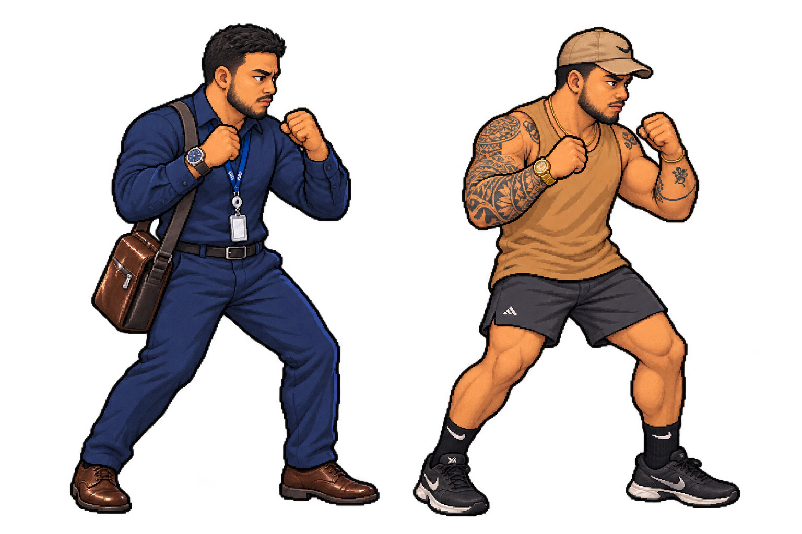

← Back to game
EIDE / LOOK REVIEW
1.76 m · Approved appearance
Menu portraits in Bozo’s style · Fighter models in Gut’s sprite style
Fighter models · Guard stance
Skin 1 and Skin 2 · Same fighter and proportions
Black trainers complete the gym outfit because the reference crops out the shoes.
Appearance approved. Open the playable combat review · See the complete fighter lineup.